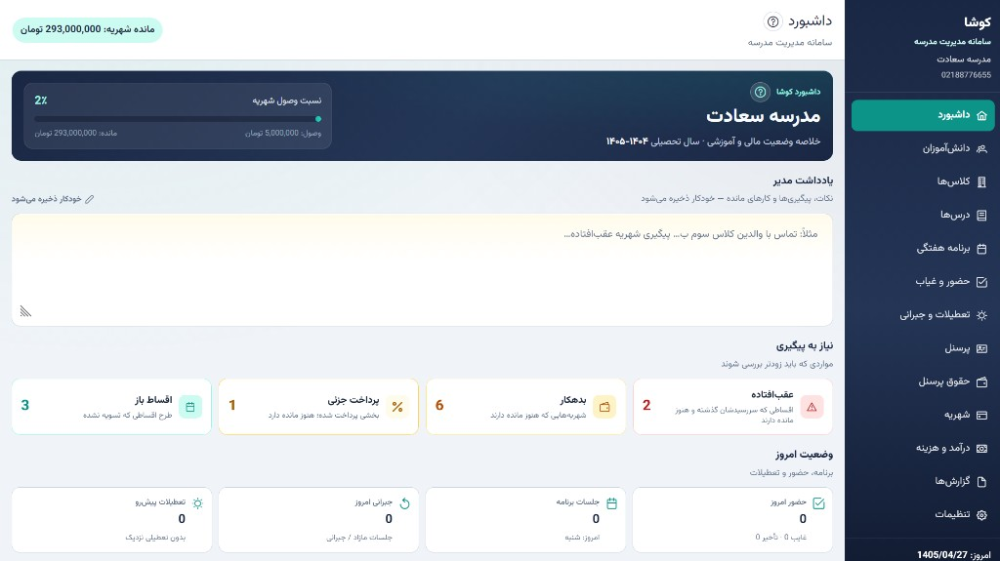
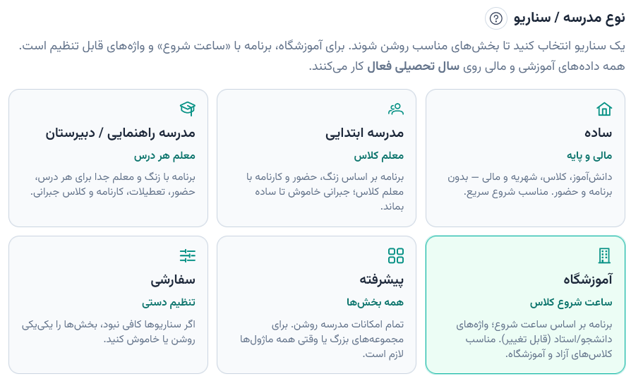

کوشا
آمده است
سامانه مدیریت مدرسه و آموزشگاه برای مدیران و منشیها — ساده، فارسی و یکجا.

همه چیز در یک جا
اگر هنوز دانشآموزان، شهریه، نمرات و حقوق را با چند فایل اکسل و دفتر جداگانه مدیریت میکنید، کوشا همه را یکجا جمع میکند.
مناسب مدرسه و آموزشگاه
سناریو را انتخاب کنید تا فقط بخشهای لازم فعال شوند — ساده، ابتدایی، راهنمایی و دبیرستان، آموزشگاه، پیشرفته یا سفارشی.

امکانات اصلی
از ثبت دانشآموز تا کارنامه و شهریه — برای مدرسه و آموزشگاه.
- داشبورد خلاصه وضعیت مدرسه
- ثبت و مدیریت دانشآموزان
- پایهها و کلاسها
- مدیریت پرسنل و معلمان
- شهریه (پرداخت کامل یا اقساط) + رسید
- پیگیری بدهکاران و اقساط عقبافتاده
- حقوق و فیش پرسنل (ماهانه / ساعتی)
- درآمد و هزینه مدرسه
- درسها و برنامه هفتگی
- تولید خودکار برنامه هفتگی
- حضور و غیاب (حاضر، غایب، تأخیر، موجه)
- تعطیلات و کلاسهای جبرانی
- کارنامه: میانترم، پایانترم یا دوره دلخواه
- صدور و چاپ کارنامه برای یک دانشآموز یا کل کلاس
- گزارشهای آموزشی و مالی (با خروجی)
- سناریو برای مدرسه ساده، ابتدایی، راهنمایی یا دبیرستان
- پیامک یادآوری شهریه و اقساط
- پشتیبانگیری و بازگردانی اطلاعات
- تاریخ شمسی و رابط فارسی راستچین
مخصوص ویندوز
نصب یکمرحلهای
فایل Setup را اجرا کنید، تأیید ویندوز را بپذیرید، و از منوی Start یا میانبر میزکار وارد شوید. بدون پیچیدگی، آماده کار.
آماده شروع هستید؟
آخرین نسخه کوشا را از گیتهاب دریافت کنید.
دانلود Kosha-Setup.exeیا از صفحه آخرین ریلیز نسخه را ببینید.